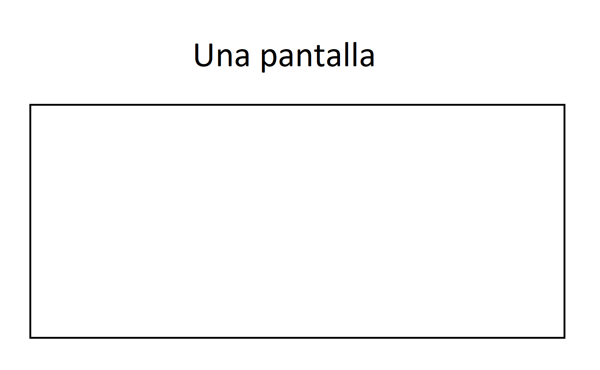
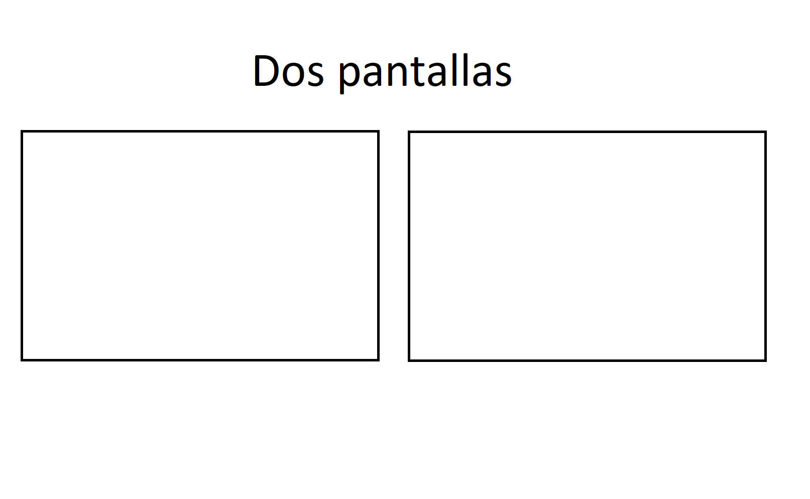

<div fxFlex fxLayout="column" fxLayoutAlign="space-around center"> 
    <span>SELECCIONA CUANTAS PANTALLAS QUIERES VER</span>
    <ng-container *ngIf="numberOfFrames > 0">
        Tengo frames
    </ng-container>
    <ng-container *ngIf="numberOfFrames == 0">
        <div fxLayout="row" fxLayoutAlign="space-between center">
            
            
        </div>
    </ng-container>
</div>
